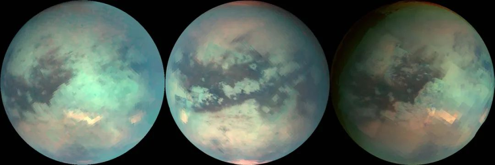

历史上的今天 惠更斯发现了灭霸的故乡
克里斯蒂安·惠更斯（Christiaan Huygens ）
Credit：NASA
1655年3月25日，荷兰数学家和天文学家克里斯蒂安·惠更斯发现了灭霸的故乡（虚构），土卫六泰坦。
当年惠更斯在观察土星环时，注意到附近有一个明亮的小点，随后经过几天的确认，证实这个小点在环绕土星运行，确认新发现了一个土星的卫星。土卫六是土星最大的卫星，也是土星截止目前82颗卫星中最先发现的。
杰拉德·柯伊伯（Gerard Kuiper），1960年，柯伊伯在亚利桑那州创建了月球与行星实验室。
Credit:NASA
近300年后，1944年，荷兰美籍天文学家杰拉德·柯伊伯发现土卫六具有与众不同的特征之一，这颗遥远的土星卫星拥有大气层。
土卫六上反射的太阳光通过光谱仪后，柯伊伯从中检测到了甲烷的存在，地基望远镜的进一步观测，证实了这一发现，土卫六拥有浓密且朦胧的大气层。
先驱者11号拍摄到的土星和土卫六，当时距离土星284.6万公里。
Credit: NASA Ames
1979年9月1日，先驱者11号飞越了土星系统，成为首个探索土卫六的航天器。天文学们之前研究过土卫六的温度，并估算出它的质量，这些特征都得到了先驱者11号的证实。
由于土卫六的大气层不透明，当年科学家们错误地认为土卫六可能是太阳系中最大的卫星。先驱者11号在土卫六的高层大气中看到了淡蓝色的烟雾，后来旅行者一号又观测到了这一现象。
 1980年10月18日，旅行者一号近距离拍摄到的土星彩色增强照。
1980年10月18日，旅行者一号近距离拍摄到的土星彩色增强照。
Credits: NASA/JPL-Caltech
1980年11月12日，旅行者1号拍摄到的土卫六，涵盖范围约2.2万公里，从中我们能看到土卫六大气层的细节。
Credits: NASA/JPL-Caltech
上面这张照片中，我们能看到橙色和蓝色的高层大气。在旅行者1号抵达土星系统前，一些科学家估计，由于土卫六的温度很低，可能在其表面存在着液态的甲烷海洋，但由于旅行者1号和旅行者2号携带的相机无法穿透土卫六浓密的大气层，无法看清土卫六的表面，所以这一猜想无法得到证实。
1981年8月4日，旅行者2号拍摄到的土星系统，当时相距大约2100万公里。
Credit：NASA
旅行者号探测器证实了土卫六大气层中有乙炔、乙烷、丙烷和其他有机分子，且大气的主要成分是氮气。
红外光下的土卫六表面
Credit: UA Lunar and Planetary Laboratory
1994年，哈勃太空望远镜在红外光波段拍摄了土卫六，照片显示有较大的明暗区域，但这并不能证实土卫六表面存在着液态海洋。
可见光和红外光波段下，土卫六的变化，分别由卡西尼号拍摄于2005年10月28日（左），2005年12月26日（中），2006年1月15日（右）。
Credit：NASA/JPL/University of Arizona
红外光下，迄今最清晰的土卫六全球影像，由卡西尼号拍摄。
Crdit：NASA/JPL-Caltech/Stéphane Le Mouélic, University of Nantes, Virginia Pasek, University of Arizona
2004年，卡西尼-惠更斯号成为首个进入土星轨道的探测器，并开始多次观察土卫六。
 2005年1月14日，惠更斯探测器成功着陆土卫六，传回的首张土卫六表面影像。
2005年1月14日，惠更斯探测器成功着陆土卫六，传回的首张土卫六表面影像。
Credit：NASA/JPL/ESA/University of Arizona
在惠更斯发现土卫六的300多年后，2005年1月14日，以惠更斯名字命名的探测器着陆土卫六，这是人类探测器首次在外太阳系着陆。
参考：
https://solarsystem.nasa.gov/moons/saturn-moons/titan